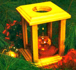
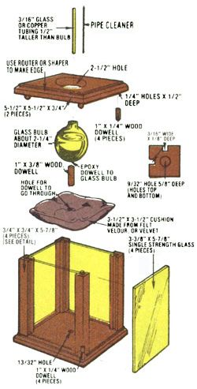

Christmas just wouldn't be . . . well, Christmas . . . without a few old-timey artifacts and decorations to prod us all into the right frame of mind for the season. And this little "fancy but homemade" oil lamp designed by the band of merrymakers who inhabit MOTHER's research labs is just the kind of holiday decoration that can do the job. 'Tain't hard to put together, either. Matter of fact, you can handle the whole project in one evening if you already own a few basic power tools.
Kick this one off by gathering together two 3/4" X 3-1/2" X 5-1/2" pieces of the nicest hardwood you can find, a 3/4"X 3/4" X 24" piece of the same wood, 8" or so of 1/4" dowel, 1" of 3/8" dowel, and four pieces of 3-3/8" X 5-7/8" single-strength glass. You'll also want to round up a glass bulb about 2-1/4" in diameter (try a drugstore, hobby shop, or novelty shop). a 4" X 8" piece of fine felt, velour, or velvet, some cotton "stuffing", an ordinary pipe cleaner, and a piece of 3/16" glass or copper tubing that's about 1/2" longer than the height of your glass bulb.
Begin your shop work by routing out a 1/8"-deep and 3/16"-wide groove down two adjacent sides of the 3/4" X 3/4" X 24" piece of wood. (Make these grooves right down the center of the two sides.) This is also a good time to use a router or shaper to cut a decorative border around all four sides of the upper surfaces of both the 3/4" X 5-1/2" X 5-1/2" squares of wood. (These decorative cute can be any shape that appeals to you. Just don't cut more than 3/8' in from the edge.)
Now drill four 1/4" holes-each 1/2" deep-into the corners of the 5-1/2" X 5-1/2" squares of wood. These holes are spaced 3-7/8" apart on their centers, and you must remember to drill one set of four holes into the "top" or "finished" side of one block and the other set of four holes into the "bottom" or "unfinished" side of the second block. This is a good time, too, to drill a 13/32" hole about 1/2" deep in the exact center of the square which will be your lamp's base (the one with its set of four holes in the top) as well as a 2-1/2" hole right through the exact center of the square which will form the lamp's cover (the one with its boles in the bottom).
Cut the 24" length of wood (the piece that you routed two grooves in) into four 3/4" X 3/4" X 5-7/8" lengths. Drill a 9/32" hole 5/8"' deep into the exact center of both ends of all four pieces of wood. Sand these four wooden corners, the base, and the lamp's cover and finish all six pieces of wood with stain or tung oil.
Next cut the 1/4" X 8" dowel into eight equal lengths and glue one into each of the 1/4" holes drilled into the corners of the two 5-1/2" X 5-1/2" squares of wood. The four 3/4" X 3/4" X 5-7/8" comer supports are then glued-with their grooves facing "in"-to the dowels that you've just fitted to the lamp's base. Before this glue dries. It's a good Idea to slip all four of the pane. of glass down Into the comer support grooves and put the lamp's cover in place temporarily . . . just for fit. Do not glue the cover in place.
Glue the 3/8" X 1" dowel to the bottom of the glass bulb with epoxy and, while It's drying, sew up the cushion that will go under the bulb. This is done by stitching your fabric into a little pillow (with a 3/8' hole through its center) that will measure 3-1/2" X 3-1/2" after it's stuffed about an inch thick with cotton. (Sew around three sides of the cushion, stuff it, sad then sew up the fourth side and make the hole in the middle of the pillow.)
And, finally, thread the pipe cleaner through the glass or copper tubing and trim it off so that both its ends are just even with (or slightly recessed into) the ends of the tube. Fill the bulb with either charcoal tighter or a pleasantly scented lamp oil, slip the cushion up over the dowel on the bulb's bottom. remove the lamp's cover and fit the dowel into the 13/32' bole in the lamp's base, and then very carefully slide the tube/pipe-cleaner wick down into the neck of the glass bulb and position It so that the wick b standing straight up.
You'll be able to light your Christmas lamp and replace its cover just as soon as the fluid soaks up into the wick. Then, to adjust the flame, merely slide the wick up or down within the tube. And don't worry about replacing that pipe cleaner: As long as it doesn't protrude above the tubing's top end, the flame will bum above - not on - the wick.
|
 STAFF PHOTO |
 |
|